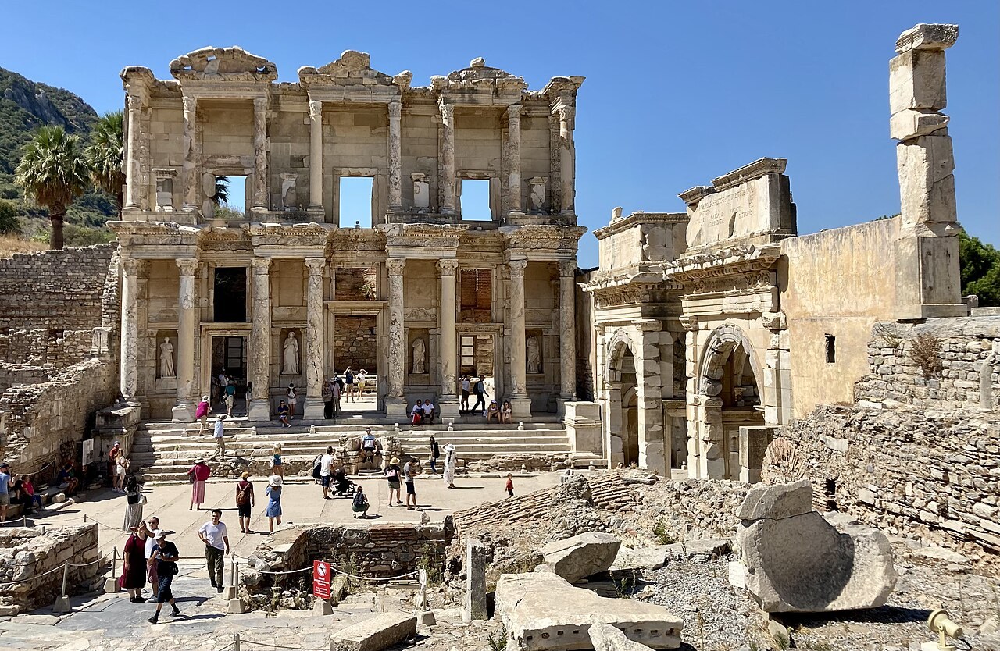

Efes gezisine hazırlık: yola çıkmadan önce
Yürüyüş temposu, rehberlik, isteğe bağlı duraklar ve yanınıza alacaklarınız için Efes ziyaretinizi kolaylaştıracak bir hazırlık rehberi.

Ziyaretin odağını belirleyin
Efes’i ziyaret ederken yalnızca bir fotoğraf noktasına ulaşmayı değil, antik kentin bütününü anlamaya zaman ayırmayı düşünün. Anıtsal yapılar, sokaklar ve kamusal alanlar, rehberin anlatımıyla birbirine bağlanır.
Kuşadası çıkışlı bir gün için hareket noktanızı ve dönüş sınırınızı önceden paylaşın. Müze, yakın çevredeki başka bir durak veya daha uzun bir öğle molası istiyorsanız bunları baştan belirtmek, programın gereksiz yere sıkışmasını önler.
Yürüyüş ve mola planı
Açık hava ziyaretinde yürüyüş yüzeyleri, güneş ve duraklar arasında geçirilen süre önemlidir. Günlük hayatta rahat kullandığınız, zeminde güven veren ayakkabılar tercih edin; yanınıza su ve mevsime uygun güneşten korunma malzemeleri alın.
Çocuklar, ileri yaştaki misafirler veya hareket kısıtlılığı olan kişiler için ihtiyaçları önceden konuşun. Her bölümün erişim koşulu aynı olmayabilir. Daha kısa bir yürüyüş veya daha sık mola isteği, güzergâh kesinleşmeden değerlendirilmelidir.
İsteğe bağlı ziyaretleri ayrı değerlendirin
Yamaç Evler, Meryem Ana Evi ve çevredeki diğer duraklar her turda otomatik olarak aynı kapsamda yer almaz. İlgilendiğiniz yerleri seçerken ziyaret süresini, transferi ve bilet kapsamını birlikte kontrol edin.
Tur sayfasındaki dahil ve hariç hizmetleri okuyun. Rehberlik ve ulaşımın dahil olması, bütün müze girişlerinin de dahil olduğu anlamına gelmez. Güncel giriş ücretleri ve ziyaret koşulları program netleşirken teyit edilmelidir.
Son kontrolünüzü yapın
Karşılama noktası, buluşma saati, rehberlik dili, kişi sayısı ve dönüş planını aynı teyit içinde görün. Limandan katılıyorsanız gemi adı ve son biniş saatini ayrıca iletin.
Hava durumuna uygun hazırlık yapıp programda küçük molalar için alan bırakın. Kesin fiyat ve müsaitlik talebiniz değerlendirildikten sonra paylaşılır. Efes turu sayfasından örnek programı inceleyerek size uygun değişiklikleri sorabilirsiniz.
Merak edilenler
Müze girişleri tur ücretine dahil mi?
Bu, seçilen turun dahil ve hariç hizmetlerine bağlıdır. Efes özel turu örneğinde giriş biletleri ayrıca değerlendirilir; kesin kapsam teklifte belirtilmelidir.
Yürüyüş temposunu değiştirebilir miyiz?
Tercih ettiğiniz tempoyu ve erişim ihtiyaçlarını önceden paylaşın. Uygun güzergâh ve molalar, güncel saha koşullarıyla birlikte değerlendirilir.